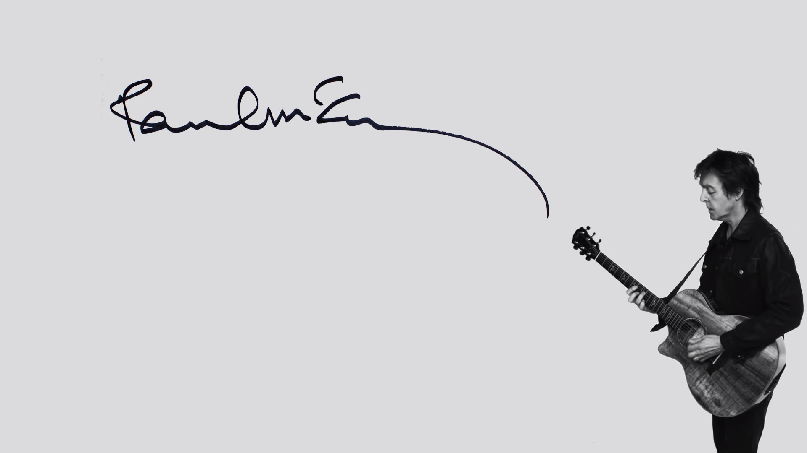

Paul
McCartney

Paul (born 18 June 1942) is an English singer-songwriter, multi-instrumentalist, and composer. He gained worldwide fame as the bass guitarist and singer for the rock band the Beatles, widely considered the most popular and influential group in the history of pop music. His songwriting partnership with John Lennon was the most successful of the post-war era.[2] After the group disbanded in 1970, he pursued a solo career and formed the band Wings with his first wife, Linda, and Denny Laine.
McCartney is one of the most successful composers and performers of all time. More than 2,200 artists have covered his Beatles song "Yesterday", making it one of the most covered songs in popular music history. Wings' 1977 release "Mull of Kintyre" is one of the all-time best-selling singles in the UK. A two-time inductee into the Rock and Roll Hall of Fame (as a member of the Beatles in 1988, and as a solo artist in 1999), and an 18-time Grammy Award winner, McCartney has written, or co-written, 32 songs that have reached number one on the Billboard Hot 100, and as of 2009 he has 25.5 million RIAA-certified units in the United States. McCartney, Lennon, George Harrison and Ringo Starr all received appointment as Members of the Order of the British Empire in 1965 and, in 1997, McCartney was knighted for services to music. McCartney is also one of the wealthiest musicians in the world, with an estimated net worth of US$1.2 billion.
James Paul McCartney was born in Liverpool's Walton Hospital on 18 June 1942. His father Jim worked in the cotton trade and played trumpet and piano in jazz and ragtime bands, and his mother Mary worked as a midwife. Paul attended the Stockton Wood Road primary school, then went on to the Joseph Williams junior school before passing his 11 Plus in 1953 and gaining a place at the Liverpool Institute.
The following year, while travelling on a bus to the Institute, he met George Harrison, who was also a student there. In 1955 the McCartneys moved to 20 Forthlin Road, a council house in the Allerton district of Liverpool. It cost them one pound and six shillings a week to live there. The house was bought by the National Trust in 1995, and today is a popular tourist destination. Back then, though, it was an unassuming terraced house built by the local authority in the 1920s.
On 31 October 1956, Mary McCartney died of an embolism following a mastectomy. She was a heavy smoker who had been suffering from breast cancer. The death shook the McCartney family, and later led to a bond between Paul and John Lennon, who lost his mother in 1958. Jim McCartney was a keen musician who had been leader of Jim Mac's Jazz Band in the 1920s. There was an upright piano in the front room at 20 Forthlin Road, which Jim bought from Harry Epstein's NEMS store, which Beatles manager Brian Epstein would later take over.
Jim encouraged Paul and his brother Mike to be musical, and gave Paul a trumpet following the death of his mother. When skiffle became a national craze, however, Paul swapped the instrument for a £15 Framus Zenith acoustic guitar. Being left-handed, Paul initially had trouble playing the instrument. He later learned to restring it, and wrote his first song, I Lost My Little Girl. He took music lessons for a while, but preferred instead to learn by ear. Paul also began playing piano, and wrote When I'm Sixty-Four while still living at Forthlin Road. Paul McCartney met John Lennon at the Woolton fete on 6 July 1957, between performances by The Quarrymen. They became friends and began writing and performing songs together. McCartney later persuaded Lennon to allow George Harrison into the band as lead guitarist in 1958.
"The type of people that I came from, I never saw better! ... I mean, the Presidents, the Prime Minister, I never met anyone
half as nice as some of the people I know from Liverpool who are nothing, who do nothing. They're not important or famous.
But they are smart, like my dad was smart. I mean, people who can just cut through problems like a hot knife through butter.
The kind of people you need in life. Salt of the earth."
— Paul McCartney, Playboy interview, 1984